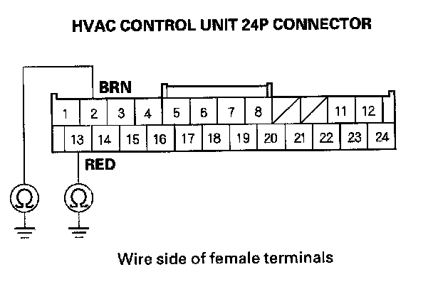
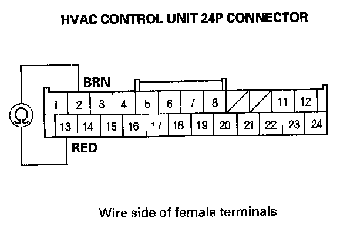

DTC indicator 9
DTC indicator 9: A Short in the Evaporator Temperature Sensor Circuit1. Clear the DTC.
2. Turn the ignition switch OFF, and then ON (II).
3. Do the self-diagnostic with the HVAC control unit.
4. Check for DTCs.
Is DTC 9 indicated?
YES - Go to step 4.
NO - Intermittent failure.
5. Turn the ignition switch OFF.
6. Remove the evaporator temperature sensor and test it.
Is the evaporator temperature sensor OK?
YES - Go to step 7.
NO - Replace the evaporator temperature sensor.
7. Disconnect the HVAC control unit 24P connector.

8. Check for continuity between body ground and the HVAC control unit 24P connector terminals No.2 and No. 13 individually.
Is there continuity?
YES - Repair short to body ground in the wires between the HVAC control unit and the evaporator temperature sensor.
NO - Go to step 9.

9. Check for continuity between the HVAC control unit 24P connector terminals NO.2 and No. 13.
Is there continuity?
YES - Repair short in the wires between the HVAC control unit and the evaporator temperature sensor.
NO - Substitute a known-good HVAC control unit, and recheck. If the symptom/indication goes away, replace the original HVAC control unit.